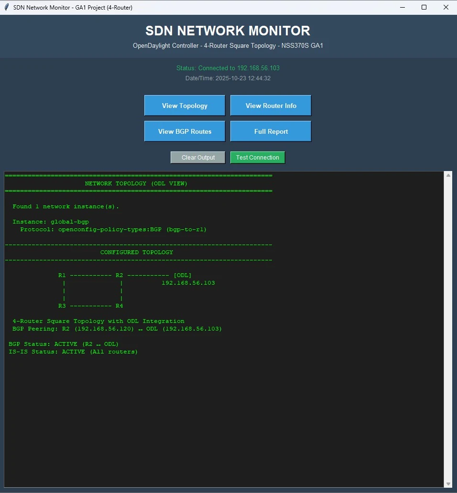
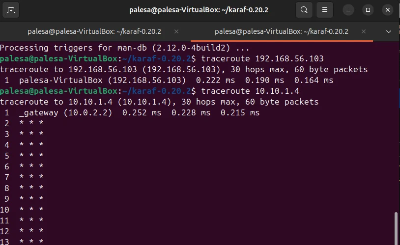
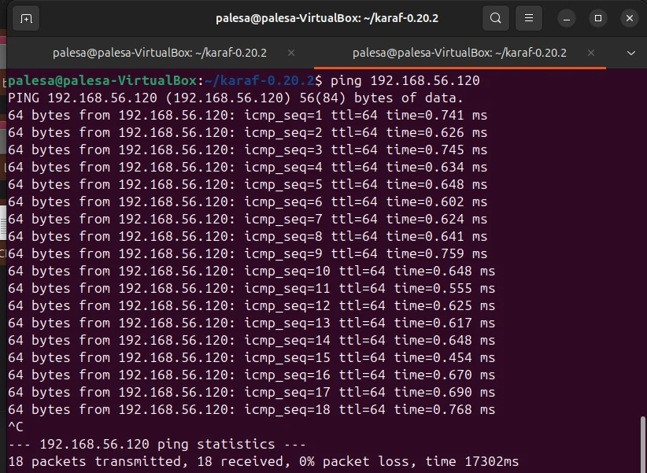

Project overview
This Network Systems 3 project examined how a growing enterprise can move from manually configured static routes to a more manageable virtual network using Software-Defined Networking (SDN).
Engineering goal
Build a four-router virtual topology and investigate dynamic routing, controller connectivity and automated network observation.
What I worked on
- Designed a four-router square topology and a structured IP addressing plan.
- Configured VyOS routers with Intermediate System to Intermediate System (IS-IS) dynamic routing.
- Worked on BGP connectivity with the OpenDaylight SDN controller.
- Developed a Python component to retrieve controller information, as described in the project report.
- Used network tests and troubleshooting to investigate addressing and configuration issues.
Approach and technologies
The environment used GNS3 for virtualization, VyOS for routing and OpenDaylight for controller-based network management. The project documented validation and configuration troubleshooting.
Outcome and learning
The project report describes established router connectivity and an OpenDaylight-connected Python monitoring component.
Original project evidence (2025)
The following images were extracted from my saved Network Systems 3 GA1 report. They document the virtual topology, Python monitor and command-line checks from the original project. The original GNS3 installation is no longer available; these are historical project artefacts, not a live simulation.



Another Network Systems 3 project
I also studied traffic engineering using graph theory, Python and a GEANT2 network dataset. Explore the Traffic Engineering project →